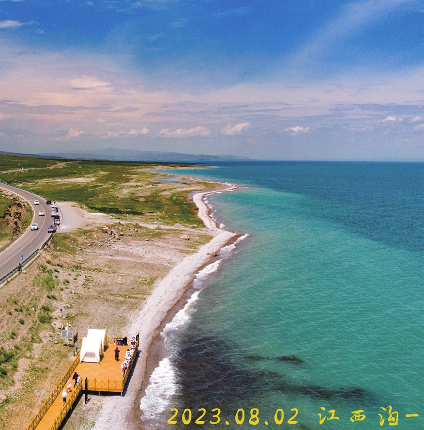
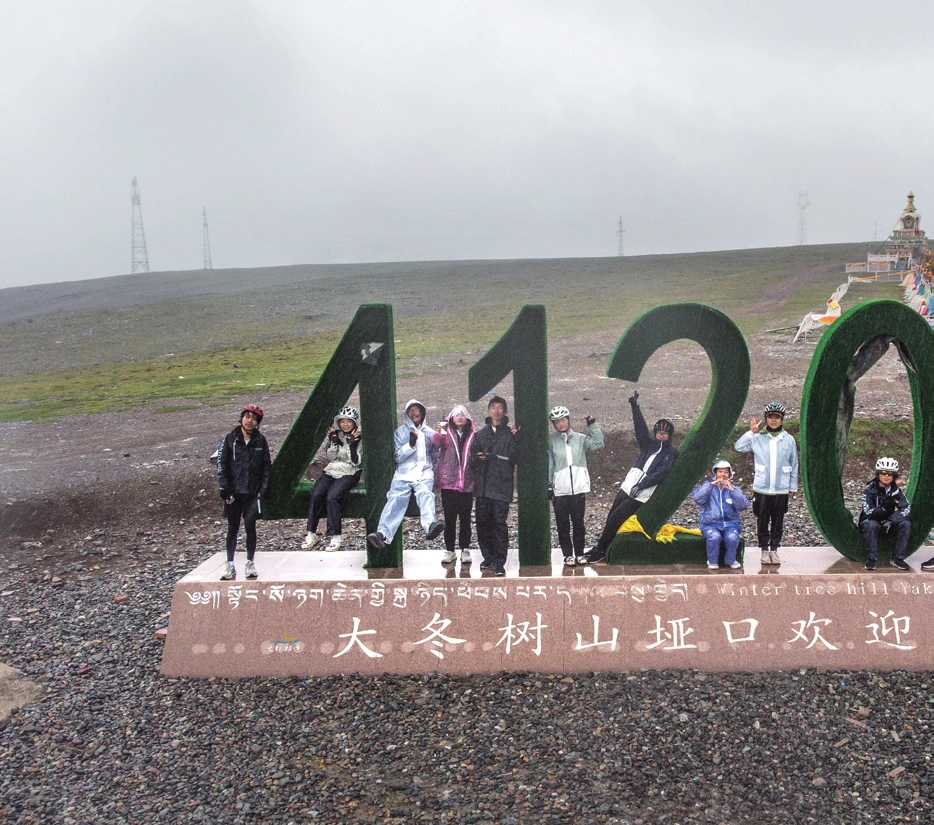
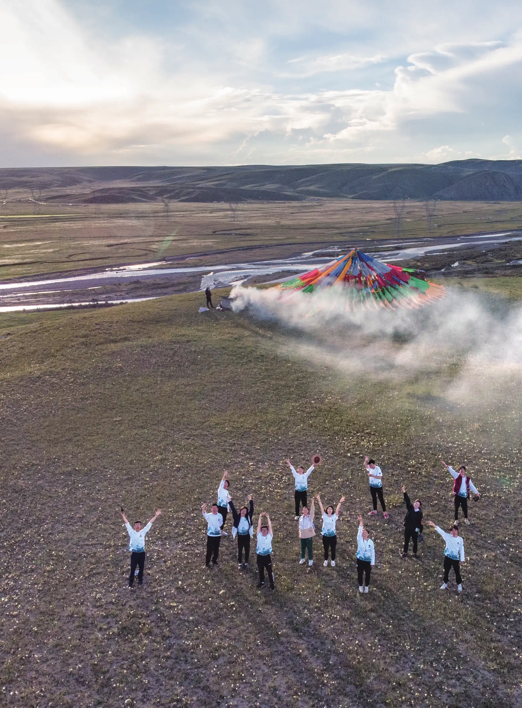

大冬树山的雨雾
原刊22
暑期令我印象最深刻的有三天，分别是第一天、默勒到祁连那天和民乐到清水的那天。第一天的暴晒、七扎三摔、接连不断的大山，民乐到清水的烈日酷暑、戈壁荒原、原野上呼啸的风。但印象最深刻的还是默勒到祁连的 4120。
早在青海湖沿岸，当被人问到是环湖吗，我都会回答道“要翻祁连山脉”，骄傲的同时而又暗自担忧。在刚察实践时就看到祁连山脉的连续降雨，又遭遇了刚察到默勒的超大起伏和风雨阻拦，不禁捏了把汗。


在到达山路之前，乌云就已经追上了我们。沿着山路缓慢上升，不一会就到达了大冬树山隧道。上垭口的道路被护栏围住，大家依次绕过护栏旁的缝隙，后援车则只能走隧道了。这时四姐的嘴唇已经开始发绀，还嘴硬着说没事，在大家的强烈要求下不甘心地吃下了蓝氧片。一开始还感叹护栏围住之后不再担心大车骑得很舒服，但后来雨雾就追上了我们。从开始的绵绵细雨到淅淅沥沥的小雨只过了不到十分钟，队伍也从一开始的紧凑变得稀稀落落。整个大山都被笼罩在濛濛细雨中，这时我已经开始和旁边的人讲起我第一次带队的情景，当时也是这种山色空蒙雨亦奇的意境。雨雾中的大冬树山虽然美，但这种恶劣天气下在高海拔翻这种被拦住（也就是说可能存在塌方等危险）的山，神经也是时刻绷着的。上山途中整体算是顺利，只有小哥轻微缺氧吸了两口氧。但当我们登上垭口时，已经是瓢泼大雨。见四下无避雨之处，大家又都没吃午饭，多待只会增加失温的风险，便拍完合照快速组织检车放坡。小哥可能由于大雨的干扰救无人机心切被机翼划伤了手指，但还算是有惊无险。
于是在高海拔的严寒下，开始了长达 30 公里的放坡。提前了解过大冬树山的路况不是很好，但当真的放下去才被这接连不断的塌方和落石所震撼。车轮碾过碎石，后轮在烂路中随时可能侧滑，雨水扑打在脸上，混杂着汗水滴落。突然的一句“减速”闯入耳朵，原来是寒冷导致控不住把被迫停下。队伍便在此临时休整，用上了暖宝宝和热水，便开始大冬树山的后半段放坡。后面的三十多公里，虽然是连续下坡，但严寒、饥饿和大雨也是对意志的考验，好在平安抵达了祁连县。在祁连的一个小餐馆里，六哥和小妹买来蛋糕，唱过《送别》与离队的大姐惜别，结束了疲惫的一天。
翻大冬树山这天没有第一天的连环扎胎，也没有头一天刚察到默勒的一山放过一山拦，更没有民乐到清水的大强度和酷暑，我对这天印象深刻也不仅仅是因为它的 4120，更是因为遗憾和圆满。遗憾于没有在暑期最高海拔多停留一会，看看脚下的世界；遗憾于大姐的离队，13 个人的队伍今天之后不会再有完整的合照；圆满于大雨让我有了在高海拔塌方地带放坡的经历，圆满于暗自担忧后战胜恶劣天气和垭口的成就感。缺憾和得偿所愿的瞬间交织在一起，便是雨雾中的大冬树山。



